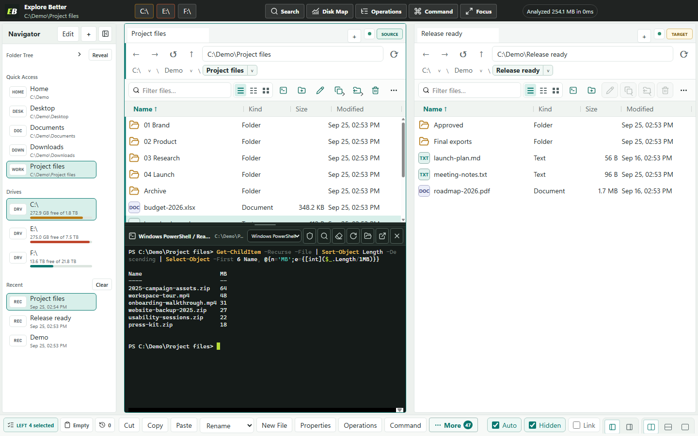

A terminal in every tab
Each file tab can open its own shell in a drawer below the pane. It starts in that folder, keeps its output when you switch tabs, and can follow you as you browse while it is idle.
- Shells
- PowerShell 7, Windows PowerShell, Command Prompt
- Engine
- Windows ConPTY with xterm.js
- Admin
- Optional, through a one-session UAC broker; the app stays non-elevated